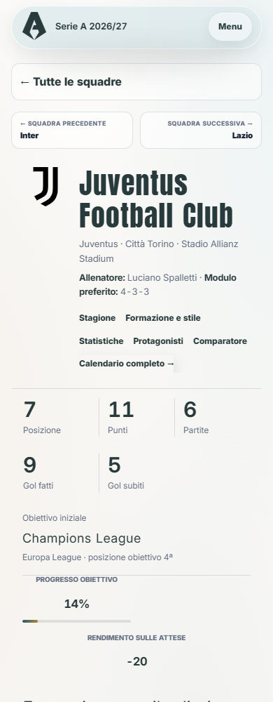
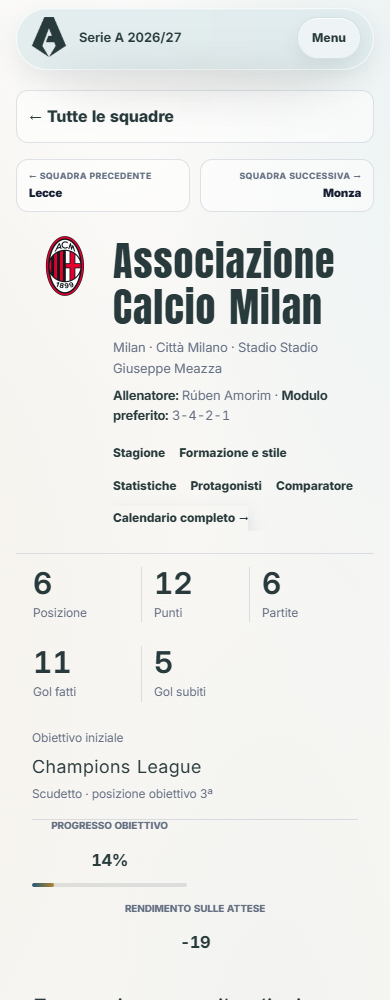
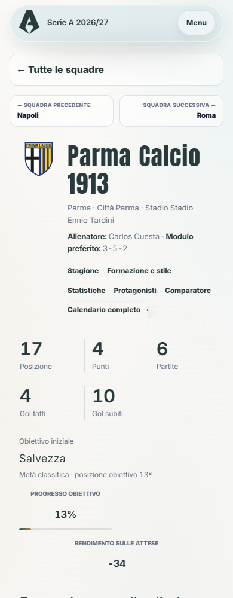
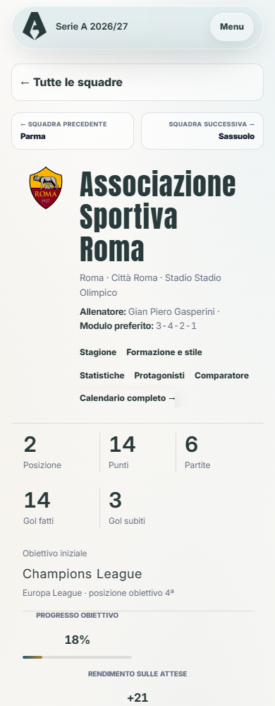

<style>body{margin:12px;background:#d7e0e8;font:15px system-ui}main{display:grid;grid-template-columns:repeat(4,1fr);gap:12px}figure{margin:0;min-width:0}figcaption{height:40px;font-weight:600}img{width:100%;height:auto;display:block}</style><main><figure><figcaption>24 · statistiche-squadra/juventus.html</figcaption></figure><figure><figcaption>25 · statistiche-squadra/lazio.html</figcaption></figure><figure><figcaption>26 · statistiche-squadra/lecce.html</figcaption></figure><figure><figcaption>27 · statistiche-squadra/milan.html</figcaption></figure><figure><figcaption>28 · statistiche-squadra/monza.html</figcaption></figure><figure><figcaption>29 · statistiche-squadra/napoli.html</figcaption></figure><figure><figcaption>30 · statistiche-squadra/parma.html</figcaption></figure><figure><figcaption>31 · statistiche-squadra/roma.html</figcaption></figure></main>